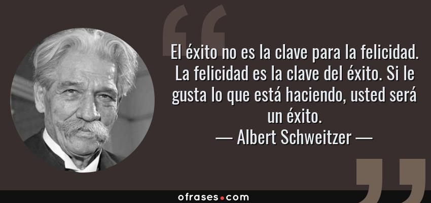
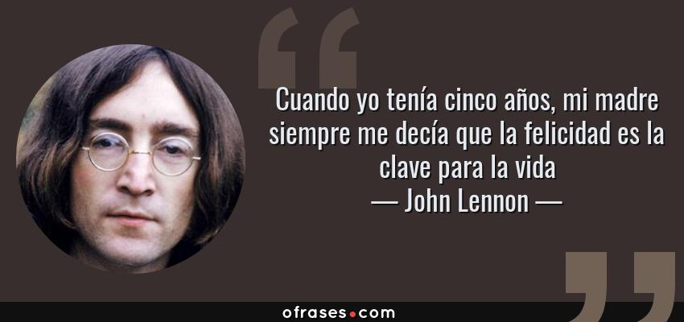

LA FELICIDAD ES LA CLAVE DE LA VIDA
Muchos de los grandes pensadores de la historia de la humanidad han intentado darle una explicación al sentido de la vida y el cómo esta hay que vivirla, cual es nuestro propósito especifico en esta pelota azul, que se encuentra flotando en un infinito mar oscuro y abismal que es el espacio sideral, somos en comparación a todo aquello se puede llegar a encontrar en ese vasto universo, una simple partícula microscópica en un gran e inmenso complejo de cosas. Aquí es donde entra un aspecto que es clave para que pueda nuestra vida tenga un sentido o una razón de ser. La felicidad, si logramos analizar, este sentimiento es un pilar importante para poder alcanzar un sentido de la vida ya que nuestra felicidad, en la mayoría de los casos, es la razón de nuestro existir, todos tenemos una razón diferente, ya que la individualidad nos hace humanos y, por consiguiente, nuestra felicidad la hayamos de diferentes maneras.
Ahora bien, aunque todos tengamos razones de existir diferentes, al menos un aspecto tenemos que si o si compartir, aunque sea ínfimo e insignificante, esa pequeña razón de existir colectiva es la que se tratará de hallar el día de hoy. A su vez esto nos va a permitir encontrar la clave de la felicidad humana, hasta incluso la clave de la felicidad general de todos los seres vivos de este planeta.
Un estado de grata satisfacción espiritual y física que puede experimentar un ser vivo es lo que técnicamente se puede denominar felicidad, eso quiere decirnos que siempre y cuando encontremos en algo satisfacción ya sea espiritual o física, lo podemos considerar felicidad. Esto considero que no es bueno en algunos casos, ya que una persona puede llegar a encontrar felicidad en la infelicidad y el sufrimiento de los demás, o en su propio sufrimiento, algunas personas se sienten felices haciéndose daño a sí mismas, ya sea físico o mental. La felicidad debemos encontrarla en cosas que no perjudiquen a nadie, ni siquiera a nosotros mismos, ya que, si nos perjudican, nos afectarán tarde o temprano en nuestra vida. Por eso es fundamental encontrar una fuente de gratificación en cosas que nos hagan bien a nuestro cuerpo, nuestro espíritu y nuestra mente. Una persona especial que nos valore y nos haga sentir bien, incluso hasta esa persona podemos ser nosotros mismo, ya que el amor propio es importantísimo para encontrar la felicidad, un hobbies o pasatiempo que haga que nuestra mente descanse o que nuestro cuerpo lo haga, un pensamiento que nos genere satisfacción pura, acciones que nos hagan sentir bien al realizarlas y que a su vez no afecten a los demás, el simple hecho de sentirnos felices por existir, entre otras formas sanas de encontrarnos felices. Es decir que, si nos hace bien y nos hace felices, debemos tenerlo en nuestra vida presente, pero si nos consume y nos hace mal a nuestra mente o nuestro cuerpo, lo mejor es dejar esas cosas y alejarlas de nuestra vida, ya que, si seguimos así, nunca seremos felices y viviremos carcomiendo nuestro ser poco a poco hasta que seamos consumidos por estas cosas malas y no podamos recuperarnos nunca más de ese vacío de maldad y tristeza.
"Yo como ser humano, aún no he encontrado una felicidad sana en mi vida, mis experiencias con respecto a estas fuentes no han sido muy buenas que digamos, he llegado hasta el punto de ser consumido emocionalmente y mentalmente por una de estas, lo bueno es que en un momento de reflexión acerca de lo que realmente importa en mi vida y el como yo soy lo más importante y mi salud es primordial, pude salir, claramente con ayuda de personas externas logré llegar a un punto neutro en el cual aún sigo buscando mi razón de vida y una felicidad, que muy probablemente, por no decir que en su totalidad, la voy a encontrar en mí mismo y el valor que yo me dé”
Una persona empieza a vivir desde el momento en el cual esta sabe por su propia voluntad que está vivo y que se encuentra en la realidad, ya que momentos antes de esto, no sabemos realmente que pasa y que somos, ni siquiera cabe la posibilidad de que tengamos algo de conocimiento ya sea sobre nosotros mismos o sobre nuestro alrededor. Algunas personas consideran que todos nacemos con un propósito en esta vida, otras piensan que a lo largo de la vida vamos construyendo nuestro propósito, y ya otras postulan que no tenemos una razón de existir, que solo tenemos que vivir. Si pes damos cuenta, la teoría más coherente es la de que no tenemos una razón o un propósito, ya que hay personas que literalmente pasan toda su vida sin hacer algo relevante o centrados en una vocación que les llene o les complemente su vida.
Ahora acá es donde entra el sentido de la vida, el cual, puede que exista, y existe claramente, ya que todas las cosas en esta realidad tienen un sentido y una respuesta, aunque sean inexplicables, podemos llegar a decir que el sentido de la vida, es saber vivirla, aprovechar todos aquellos buenos momentos, vivir la vida al máximo, tomar riesgos, aprender y llenarnos de conocimiento, experimentar cosas nuevas, indagar y explorar, no vivir una rutina, aprovechar este mundo y esta vida al máximo, ya que vida solo hay una y hay que vivirla.
"En un momento de mi vida pensé que las cosas no tenían un sentido en realidad, que todo es un gran sinsentido que nos abruma y nos encasilla en una penuria eterna y un entendimiento total de las cosas, que la vida no tiene sentido alguno, que somos unos simples microbios en un organismo inmenso, que no valemos nada, que nuestra vida no es importante. Pero claramente es una gran mentira, nosotros somos importantes, solo que quienes nos deben dar esa importancia y los que podemos hacernos ver somos nosotros mismo, tenemos el control de nuestra vida y no debemos desperdiciar esa oportunidad que el universo nos da, la vida es una y hay que vivirla, y si no la sabemos vivir, nunca empezaremos a experimentar realmente lo que la vida es”.
En conclusión, la vida es algo hermoso, tenemos que aprovecharla, encontrar eso que nos hace felices realmente, que tarde o temprano llegará, no forzar su existencia, ya que el universo sabe cuándo darnos eso, vivir cada día como si fuera el ultimo y encontrar en nosotros mismos una razón para existir, que nos impulse a seguir adelante y que nos demuestre por qué la vida es algo importante y valioso. Es por eso que:
"La felicidad es la clave de la vida".